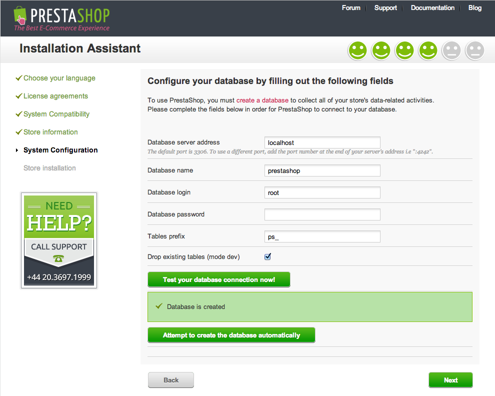
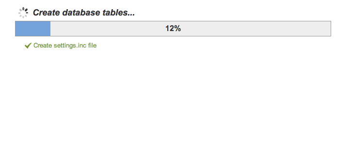
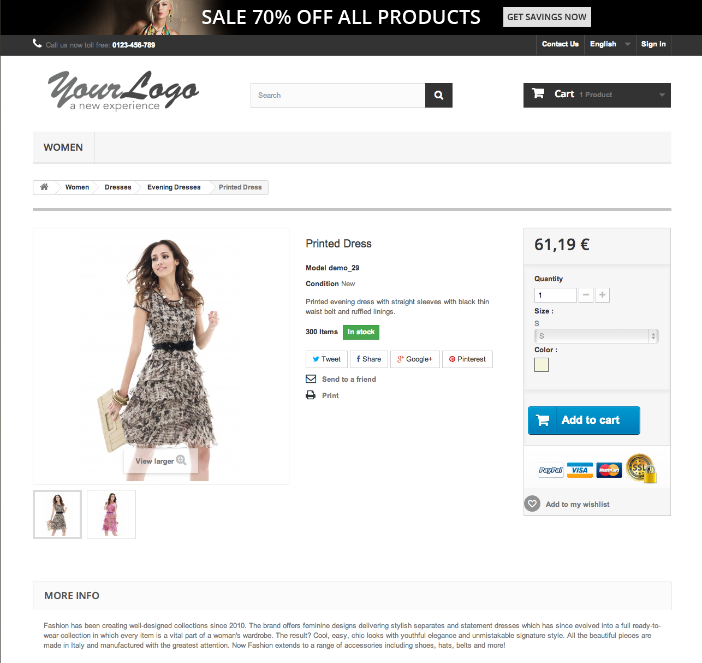
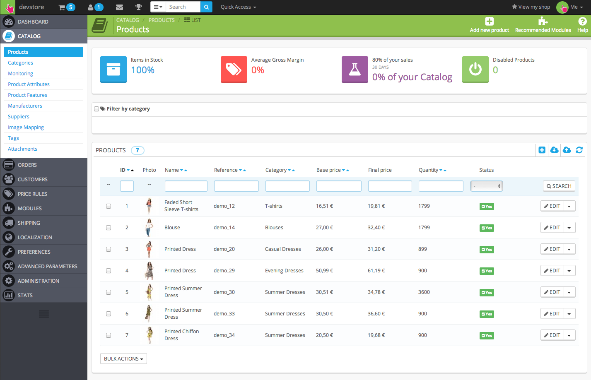
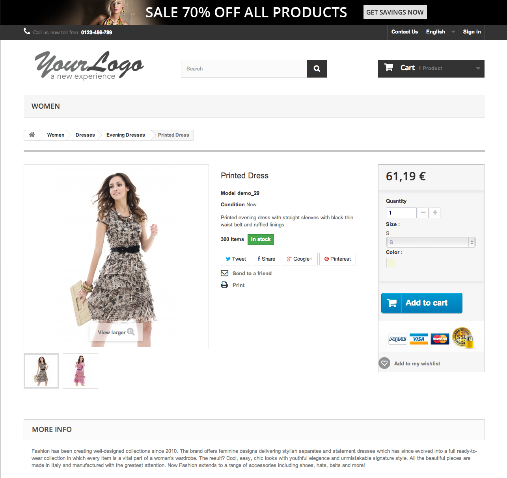

-
Identifiez-vous sur Koding.com
Le plus facile est d'utiliser votre compte Github.
Koding fournit gratuitement un service puissant pour développer sur un serveur virtuel à partir d'un navigateur. -
Accédez à l’onglet terminal de Koding
Cet onglet va vous permettre d'intéragir avec votre machine virtuelle en saisissant des lignes de commandes.
-
Clonez PrestaShop v1.6 sur votre nouvelle machine virtuelle
git clone https://github.com/PrestaShop/PrestaShop.git Web/PS16
cd Web/PS16/PrestaShop
chmod -R 777 cache/ config/ log/ img/ mails/ modules/ themes/*/lang themes/*/cache translations/ upload/ download/ themes/*/pdf/lang/ -f
-
Installation de PrestaShop
Accèdez à l’url d’installation de votre boutique :

http://username.kd.io/PS16/install-dev/
...et suivez le processus d’installation de votre nouvelle boutique.
PrestaShop est capable de créer sa table de données tout seul.
 -
Félicitations !
Votre boutique de développement est prête.
- 
Front Office : http://username.kd.io/PS16/
- 
Back Office : http://username.kd.io/PS16/admin-dev
- 